Birra artigianale e vino.
Si entra da sconosciuti, si esce amici. Birra artigianale, vino e distillati scelti con cura, per un aperitivo che finisce a dopocena. A Jerago con Orago (Varese).
Novità ed eventi
Sei vie alla spina. Scelte con cura, sempre diverse.
- Media 40 cl € 6
- Piccola 20 cl € 3,50
- Tutti i prezzi nel menù
Due frigo pieni di lattine e bottiglie.
Da bere qui in compagnia o da portare a casa. Non sai cosa scegliere? Siamo qui apposta per te.
Una bottiglieria curata e selezionata.
- Vino in bottiglia.Una selezione curata di vino naturale, artigianale e convenzionale, da bere qui o da portare a casa.
- Whisky e rum internazionali.Distillati da assaggiare con calma.
- Grappe, liquori e amari.Per chiudere la serata come si deve.
Enoteca: vino al calice e sfuso.
- Al calice, da € 4 a € 7.Controlla la lavagna «Vini al calice».
- Sfuso, in diversi formati.Riempi e porta a casa.
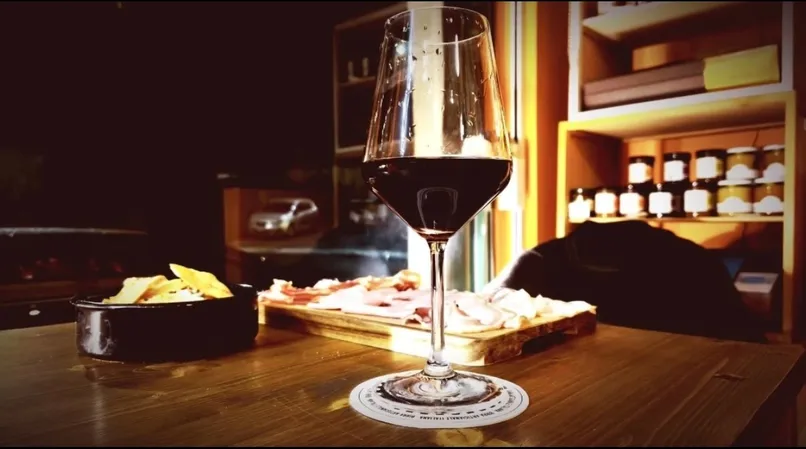
Dall'aperitivo al dopocena
Si comincia con un tagliere, qualcosa di fritto e un buon bicchiere. Poi si tira fino a tardi, e chi non conoscevi diventa un amico.
Taglieri serviti fino alle 21.00.
- Patatine fritte€ 4
- Chicken nuggets (10 pz)€ 6,50
- Panzerottini pomodoro e mozzarella (5 pz)€ 4,50
- Veggie polpettine alle alghe (10 pz) e triangolini veganda € 4
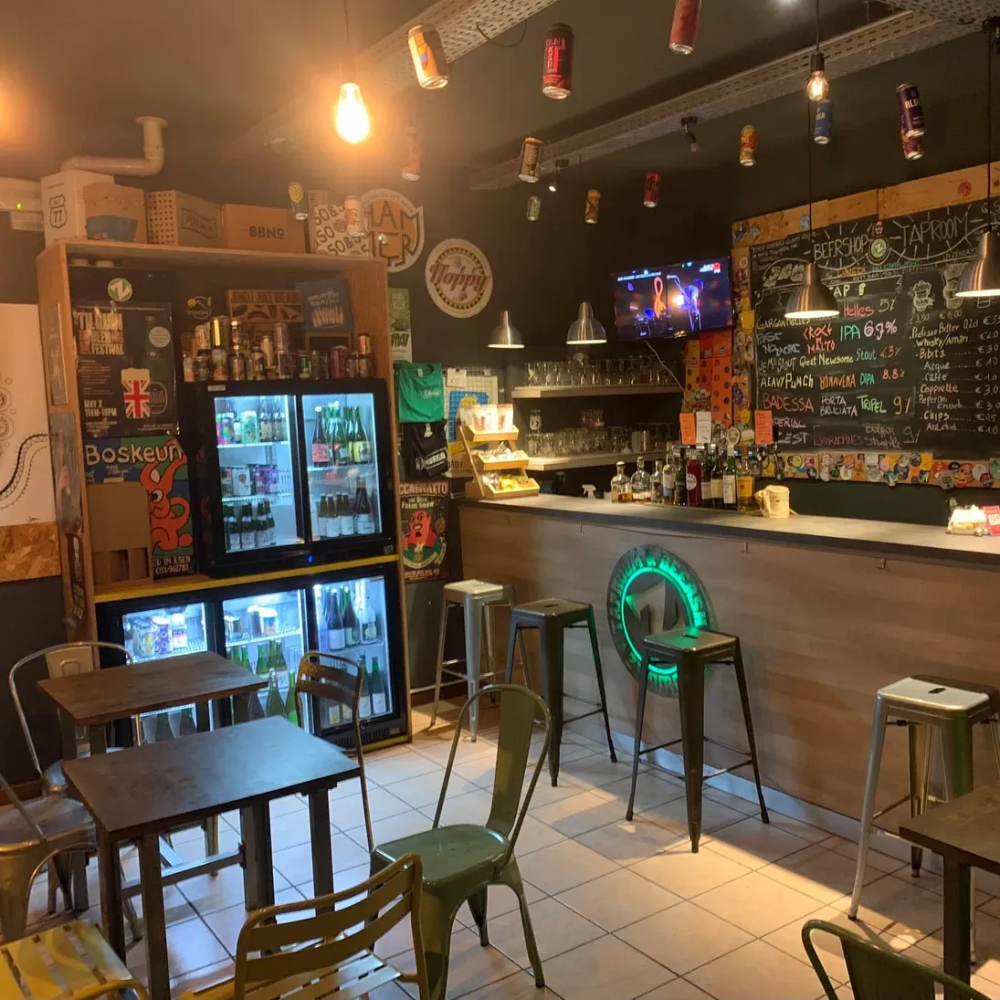
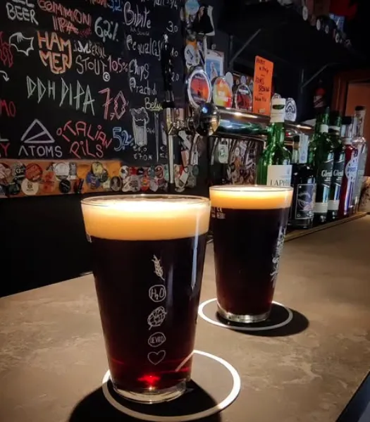
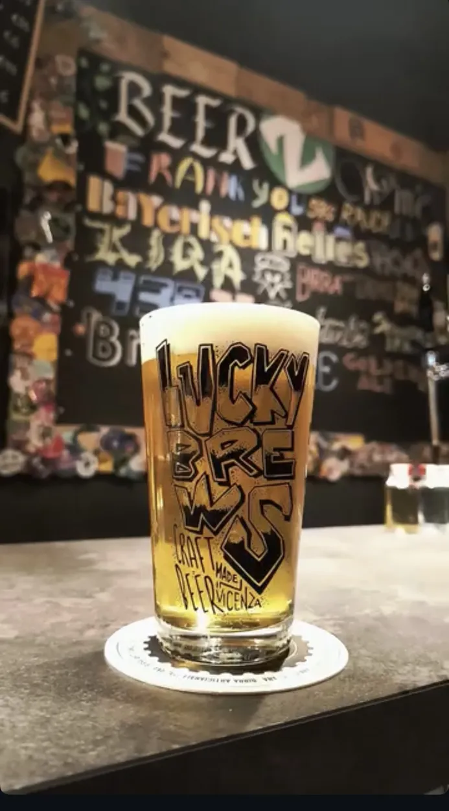
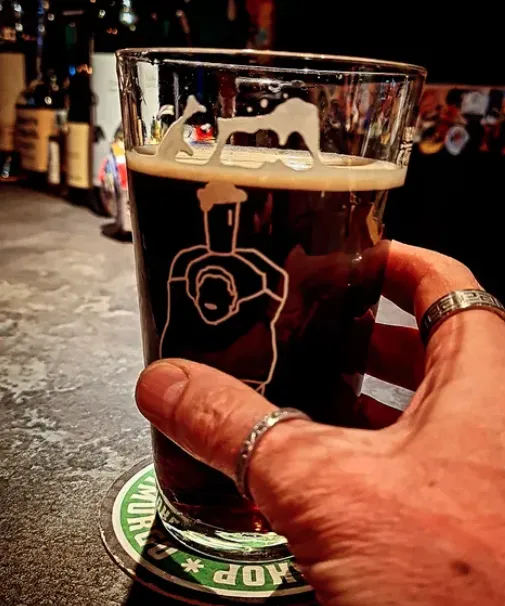
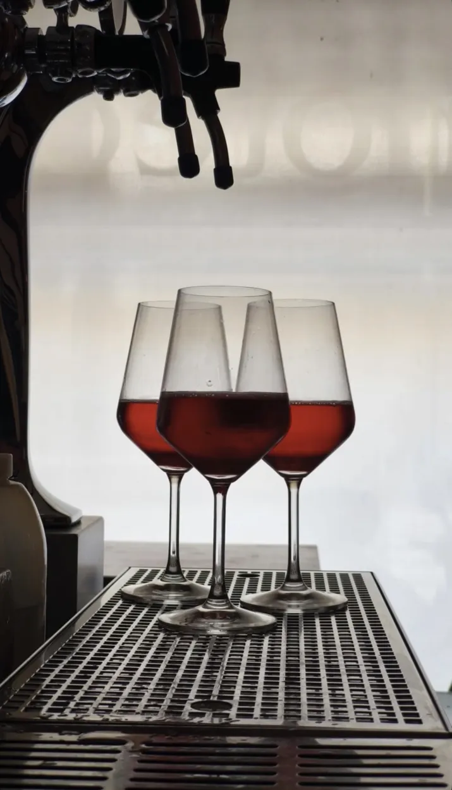
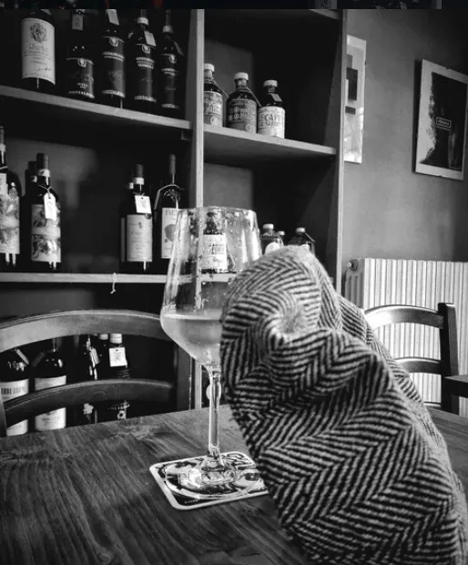
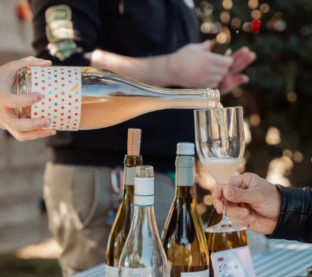
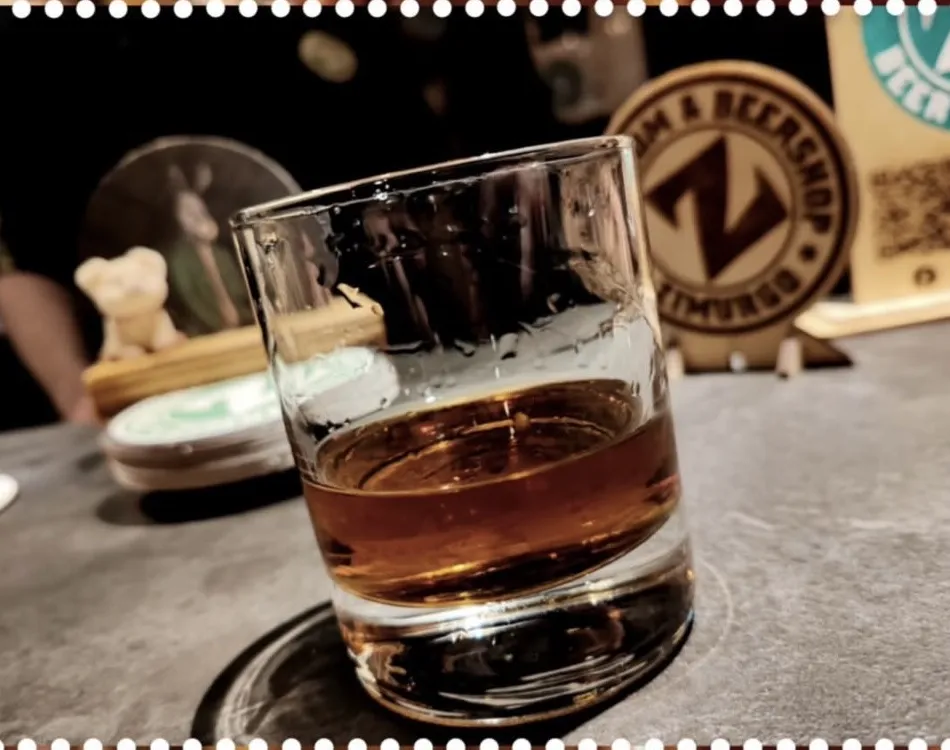
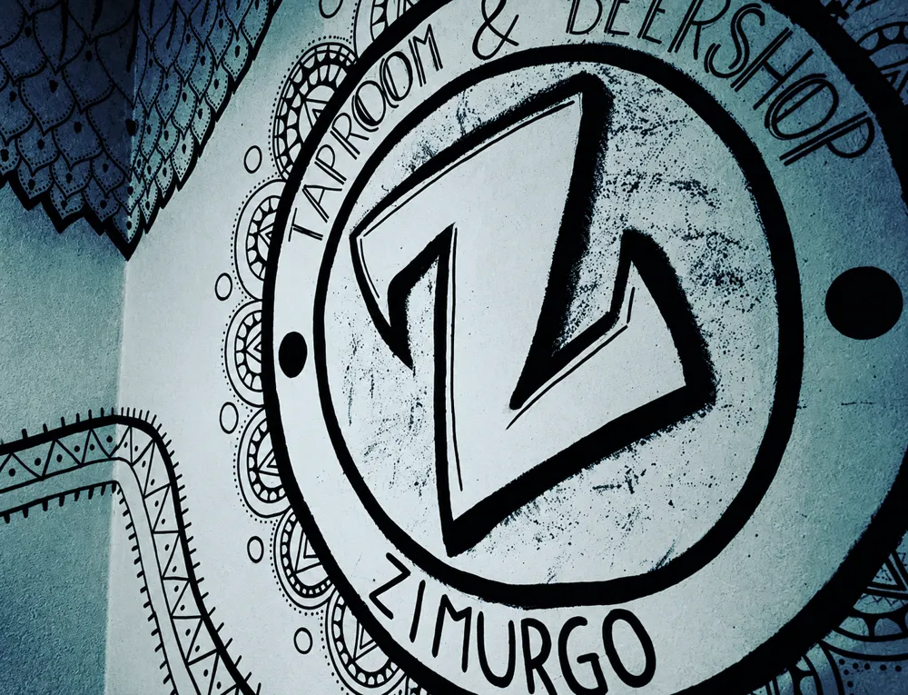
Zimurgo: cosa significa?
La zimurgia è il ramo della chimica che si occupa dell'uso degli enzimi e dei processi di fermentazione. Cioè quello che trasforma il malto in birra e l'uva in vino.
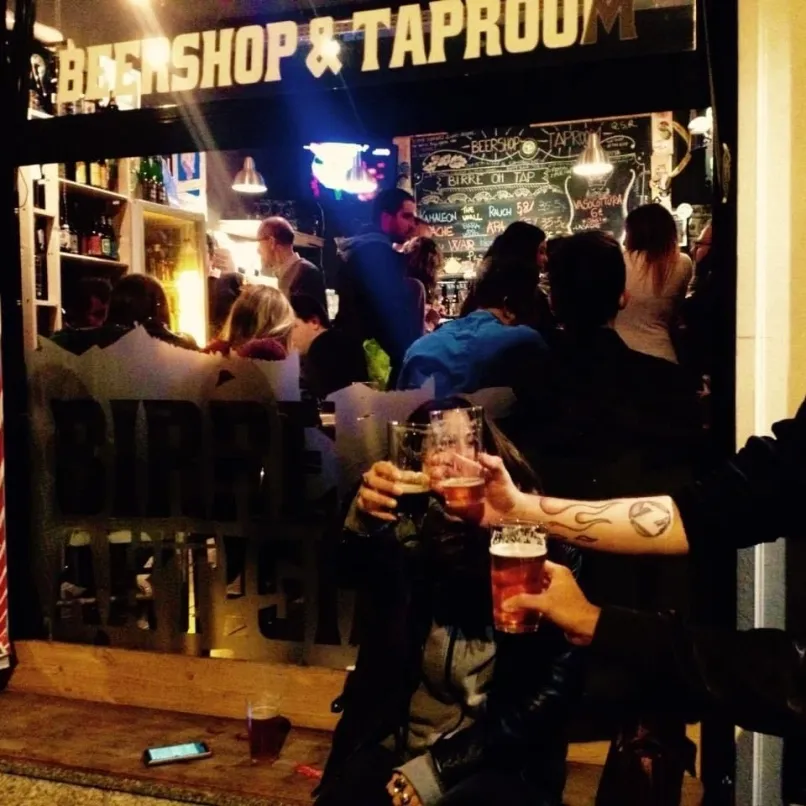
Si entra da sconosciuti, si esce amici.
Domande frequenti
Quali sono gli orari di apertura?
Martedì chiuso. Gli altri giorni la mattina dalle 10:00 alle 12:30 e il pomeriggio e la sera dalle 16:00 alle 00:00 (da domenica a giovedì) o dalle 16:00 all'1:00 (venerdì e sabato). Per aperture straordinarie guarda Instagram e Facebook.
Quante birre artigianali avete alla spina?
Sei vie alla spina in continua rotazione, più due frigo pieni di lattine e bottiglie, da bere nel locale o da portare a casa. L'elenco aggiornato è sulla lavagna in locale.
Quanto costa una birra alla spina?
La media da 40 cl costa € 6, la piccola da 20 cl costa € 3,50. Per le birre con un asterisco in lavagna: € 6,50 / € 4,00 (*) oppure € 7,00 / € 4,50 (**).
Avete vino sfuso e vino al calice?
Sì. Il vino sfuso è disponibile in diversi formati, i vini al calice vanno da € 4 a € 7. I vini del giorno sono sulla lavagna «Vini al calice».
Zimurgo è un pub, una birreria, un'enoteca o un beer shop?
Tutte e quattro. Pub e birreria per bere in compagnia, con 6 birre artigianali alla spina in rotazione. Beer shop con lattine e bottiglie di birra artigianale, da bere nel locale oppure da portare a casa. Enoteca per il vino al calice e sfuso (questo solo da asporto) e bottiglieria con vari vini artigianali, naturali e convenzionali, con in più whisky, rum, grappe, liquori e amari.
Si può mangiare da Zimurgo?
Sì: taglieri di prosciutto crudo, salame e formaggi (fino alle 21.00), patatine fritte, chicken nuggets, polpettine veggie alle alghe, panzerottini e triangolini vegani, con diverse salse. Trovi tutto nel menù.
C'è parcheggio vicino al locale?
Sì, è gratuito: di fronte al locale in Via Varesina 22 e nelle vie Cesare Battisti, Autostrada, Bonomi, Guglielmo Marconi ed Enrico Fermi, tutte a Jerago con Orago.
Dove siamo
Zimurgo Beer & WineVia Varesina 22
21040 Jerago con Orago (VA)
Da Gallarate in 10 minuti, da Varese in 20.
Dove parcheggiare
Il parcheggio è gratuito. Trovi posto in Via Varesina 22, di fronte al locale, e nelle vie vicine, tutte a Jerago con Orago:
- Via Cesare Battisti
- Via Autostrada
- Via Bonomi
- Via Guglielmo Marconi
- Via Enrico Fermi
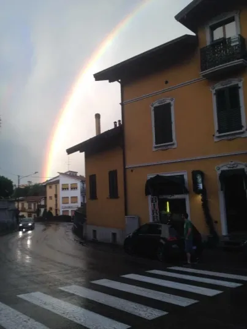
Orari
- Lunedì10:00–12:30 · 16:00–00:00
- MartedìChiuso
- Mercoledì10:00–12:30 · 16:00–00:00
- Giovedì10:00–12:30 · 16:00–00:00
- Venerdì10:00–12:30 · 16:00–01:00
- Sabato10:00–12:30 · 16:00–01:00
- Domenica10:00–12:30 · 16:00–00:00
Telefono e WhatsApp:
+39 347 1686269
Per eventuali aperture straordinarie guarda i nostri social.
La mappa è di Google e, quando la carichi, Google può impostare i suoi cookie.
Zimurgo è un social pub.
Un social pub è un locale fatto per stare insieme. Un bancone dove si parla con tutti, tavoli dove ci si siede accanto a chi non si conosce e un posto dove tornare.
Questo è Zimurgo! Amici che si ritrovano, persone nuove che si incontrano, un ambiente caldo e accogliente, e prodotti scelti con cura, dalla birra artigianale al vino fino ai distillati: ideale per l'aperitivo e per restare fino a dopocena. Un vero punto di riferimento in provincia di Varese.